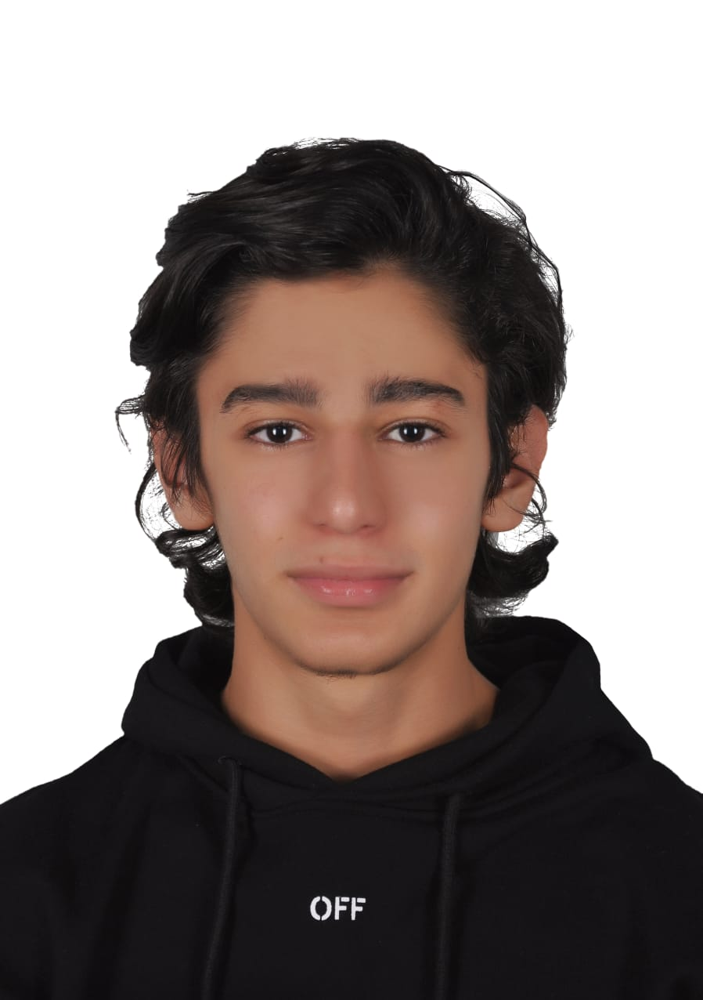

index

Data Scientist
Présentation
Étudiant en BUT Science des Données (2ᵉ année) – spécialisation EMS. Je combine des compétences en analyse statistique, traitement de données et visualisation, avec une forte rigueur et un esprit de résolution de problèmes.
Data
R / Python
Statistiques
Reporting
Formation
- 2024 – Aujourd’hui : BUT Science des Données (2ᵉ année), IUT Paris Rives de Seine – Paris.
- 2021 – 2024 : Licence Sciences de la Santé, Université Paris Cité.
Objectif
Intégrer une opportunité (stage / alternance / projet) en analyse de données, BI ou data science, et produire des résultats clairs, utiles et présentables à un public.